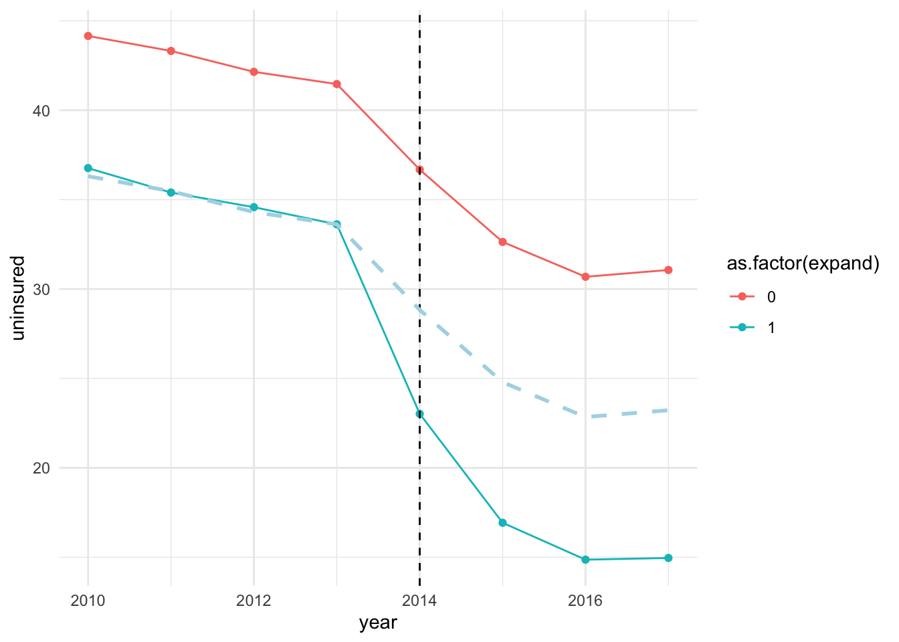

4 DiD in multi-period set up
So far we have only considered the canonical DiD (two groups and two period DiD framework).
However, data may be available for several periods before and after the treatment implementation. In this case, we will be in the setting of multi-period DiD. For example, for the Medicaid expansion case, we have data spanning from years 2010 to 2017. We’d like to utilize all of these years rather than just years 2013 and 2014 as in the canonical DiD setting.
Using the multi-period set up can be helpful for the following reasons:
We can trace the dynamic effects of the treatment following the implementation. This means that we can trace the ATT estimate of Medicaid expansion for periods following its implementation, i.e., in 2014, 2015, 2016, and 2017. If the effects of expansion are increasing over time, then this setting will be very helpful in uncovering such dynamics. In other words, we can trace the potential heterogeneous effects of the treatment over time.
Next, the multi-period setting allows us to way to check the validity of the parallel trend assumption. As mentioned above, the exact test for the parallel trend assumption is infeasible. However, we can deduce suggestive evidence to assess validity of this assumption. See below.
Let’s first plot the mean uninsured rate between the years 2010 and 2017 across the treatment versus the control groups.
# estimate the mean uninsured rate by expansion status and year
dat_sum <- mort_allcauses %>%
group_by(year, expand) %>%
summarize(uninsured = mean(sahieunins138))## `summarise()` has grouped output by 'year'. You can override using the
## `.groups` argument.post_cf_treat <- dat_sum$uninsured[dat_sum$expand == 0] + naive_pre
dat_treat_cf <- data.frame(year = seq(2010, 2017, 1), expand = rep(1, 8), cf = post_cf_treat)
dat_sum <- dat_sum %>%
left_join(dat_treat_cf, by = c("year", "expand"))
f_uninsured <- ggplot(dat_sum, aes(x = year, y = uninsured, group = as.factor(expand), color = as.factor(expand)), shape = as.factor(expand)) +
geom_point() + geom_line() + theme_minimal() +
geom_vline(xintercept = 2014, linetype = "dashed")
ggplot(dat_sum, aes(x = year, y = uninsured, group = as.factor(expand), color = as.factor(expand)), shape = as.factor(expand)) +
geom_point() + geom_line() + theme_minimal() +
geom_vline(xintercept = 2014, linetype = "dashed") +
geom_line(data = dat_sum,
aes(y = cf),
linetype = "dashed",
color = "lightblue",
linewidth = 1)## Warning: Removed 8 rows containing missing values or values outside the scale range
## (`geom_line()`).
The plot shows that uninsured rate trended parallelly between the treated and control groups prior to the expansion. The rates dropped following the expansion year (2014) across both the treated and control groups, but the magnitude of drop in uninsured rate is higher for the treated group.1
The DiD uses the control group as the counterfactual for the treated group. In other words, we are assuming that in absence of the treatment, outcome for the treated group would have evolved similarly to that of the control group. This is the key assumption of DiD – the parallel trend assumption. Note that, once we difference out the pre-treatment means between the treated and controls groups, we obtain the dashed line, which is the counterfactual for the treated group. In this case, the counterfactual line overlaps the average outcome for the treated group, suggesting that outcome was trending similarly across the two groups during the pre-treatment period. Loosely speaking, ATT is the average gap between the outcome for the treated group (solid blue line) and the counterfactual outcome (dashed line) during the post-treatment period.
As previously mentioned, we are unable to provide an actual test for parallel trend assumption due to the missing data on treated observations following the treatment in a state when treatment is absent. This does not mean that we are absolutely helpless. There are a list of things that can be done to provide suggestive evidence in favor of or lack of parallel trend. They are:
Check pre-treatment summary statistics across treatment and control groups. Say, treatment and control groups have highly different pre-treatment characteristics. It is unlikely that parallel trend assumption will hold in this case. It is because pre-treatment variables that influence the outcome can induce different dynamics in trends. Hence, the outcome trends between the treated and control groups may vary even in absence of the treatment.
Usually trends in outcomes across treated and control groups are assessed to evaluate parallel trends. If outcome is trending parallely between the two groups prior to the treatment, then it provides evidence in favor of PTA. However, concluding that PTA does not hold in a case of non-parallel trend is a narrow assessment at the best, since this approach merely depicts unconditional trends. PTA may have more leverage once (pre-treatment) covariates are accounted for.
The next approach that has been used widely is the event-study. We will discuss this approach soon.
In most cases, unconditional parallel trend assumption may not be very convincing. Why?
The drop in uninsured rate for the control group can be explained by the implementation of other aspects of ACA such as subsidies and employment mandate.↩︎